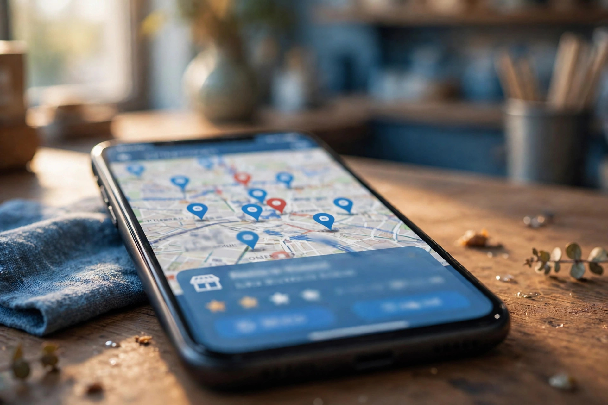

Imagine a customer in your town needs a haircut, a plumber, or a place to buy a mobile phone. They take out their phone, open Google, and type something like "barber near me" or "plumber in Layyah". Within seconds, Google shows a map with a short list of businesses, their ratings, phone numbers and opening hours. The customer usually calls one of the first names on that list. Local SEO is the work that helps your business be one of those names.
SEO stands for search engine optimization, which simply means helping your business appear when people search on Google. Local SEO is the part of that work focused on a place: your town, your area, and the customers who live and work near you. If your customers come from your own city or nearby towns, local SEO is probably the most useful kind of online marketing you can do.
Where Local SEO Shows Your Business
Local SEO mainly affects two places on Google. The first is Google Maps, where your business appears as a pin with your name, rating and directions. The second is the box of local results that appears near the top of a normal Google search, often called the local pack. It shows a small map and usually three businesses, each with a call button and reviews.
Both of these come from the same source: your Google Business Profile. This is the free listing that holds your business name, address, phone number, hours, photos and reviews. When someone searches locally, Google mostly reads this profile, not just your website. That is why local SEO starts with the profile and why keeping it accurate matters so much.
How Google Decides Which Businesses to Show
Google cannot show every business, so it picks the ones it believes fit the search best. It looks at three broad things. First, relevance: does your profile clearly say you offer what the person searched for? Second, distance: how close is your business to the person searching? Third, prominence: how well known and trusted does your business appear, based on reviews, photos, and how consistently your details appear across the internet?
You cannot control distance, but you can strongly influence relevance and prominence. Clear categories and services improve relevance. Honest reviews, real photos and consistent details improve prominence. If you want the fuller picture, our guide on how Google Maps rankings work explains these three factors in plain words.
The Main Parts of Local SEO
Local SEO is not one trick. It is a set of steady, practical tasks that work together:
- A complete Google Business Profile with the right category, services, hours and description.
- Accurate details everywhere, so your name, address and phone number match on every website and directory.
- Real customer reviews, earned honestly and answered politely.
- Good photos of your shop, your team and your work, added regularly.
- A helpful website that mentions your services and the areas you serve in natural language.
- Regular updates, such as posts and offers on your profile, so the listing stays active.
Our local SEO and Google Business Profile service covers these tasks together, because doing only one of them in isolation rarely moves the needle for long.

How Local SEO Differs From Regular SEO
Regular, or organic, SEO is about ranking web pages in the normal list of search results. It matters for blogs, online shops and businesses that sell across a whole country. Local SEO is narrower and more personal: it is about a searcher, a place, and a business that can serve them today. The signals are different too. Reviews and map visibility matter far more locally, while long articles matter less.
Most small businesses need local SEO first, because their customers are local. A general store in Chowk Azam does not need visitors from another province; it needs the people driving past its street to find it on their phones. If you are unsure which type your business needs, our comparison of local SEO vs organic SEO walks through the difference side by side.
A Simple Example From Everyday Life
Consider two mobile repair shops on the same road. The first has no Google profile, an old phone number on a directory site, and no photos. The second has a complete profile, recent photos of the shop counter, a steady flow of genuine reviews, and the same phone number everywhere. When a visitor to the town searches "mobile repair near me", Google has far more confidence in the second shop, so it shows that one. The customer calls, gets directions, and walks in. That difference is local SEO in action, and it has nothing to do with tricks or luck.
How to Start With Local SEO
Start with the basics before anything advanced. Claim or create your Google Business Profile, and check every field carefully. Make sure your business name, address and phone number are written exactly the same way everywhere they appear online. Add clear photos, choose the most accurate category, and list your services in plain words your customers actually use. Then build a gentle habit: ask happy customers for reviews, reply to every review you receive, and keep your hours updated on holidays and special days.
From there, local SEO becomes maintenance rather than a project. A little attention every month keeps your profile accurate and active, and over time that steadiness is what Google rewards. You can go deeper with our step-by-step Google Business Profile optimization guide when you are ready for the full walkthrough.
Frequently Asked Questions
What is the difference between local SEO and normal SEO?
Normal SEO helps a website rank in regular search results for anyone, anywhere. Local SEO focuses on people searching in or near a specific place, and it works mainly through your Google Business Profile and Google Maps. Most local businesses need both, but local SEO usually brings the fastest enquiries.
Do I need a website for local SEO to work?
A Google Business Profile can bring calls and direction requests even without a website, so local SEO can start there. A simple website still helps, because it gives customers more detail, supports your profile, and can appear in regular search results as well.
How long does local SEO take to show results?
Fixing wrong details and completing your profile can help quickly, because Google can show better information straight away. Building reviews, photos and a steady local presence takes longer and grows gradually. Local SEO is ongoing work, not a one-time setting.
Is local SEO only for shops with a physical location?
No. Businesses that visit customers, such as plumbers, electricians and delivery services, can also use local SEO by setting service areas on their profile instead of showing a shop address. What matters is serving customers in a defined area.
Want More Customers From Google?
Call 0327 7350830 or email seozaheer14@gmail.com. Zaheer Seo Expert, Layyah - Rajan Shah Road, Rana Nagar, Chak 116 TDA, Pakistan. Open 24 hours.
Get Your SEO Strategy →